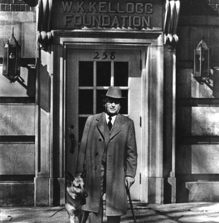
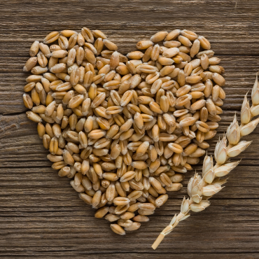
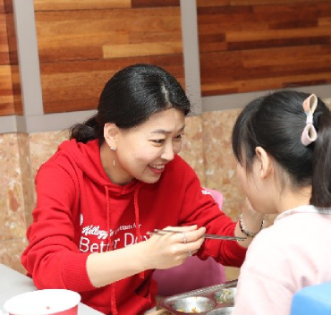

BetterDays
BetterDays
BetterDays
BetterDays
더 나은 내일 캠페인

- 더 나은 내일을 만들기 위해 110여년 동안 기울여온 켈로그의 노력
-
켈로그는 1906년 설립 당시부터 열정이 가득한 다양한 사람들이 모여 만든 건강한 식품 제공으로 세상을 변화시키기 위해 노력해온 ‘Heart & Soul’을 지닌 회사입니다. 켈로그의 창업자인 W.K.Kellogg는 진보적인 자선가이자 최초의 웰빙 선지자였으며, 켈로그는 이러한 창립자의 확고한 철학과 가치에 따라 110여년이 넘는 세월동안 맛과 영양이 풍부한 좋은 먹거리를 제공하고 소비자, 지역 사회 그리고 지구에 긍정적인 변화를 가져올 수 있도록 지속적인 노력을 기울여 오고 있습니다.
특히 아침식사 시리얼의 개척자인 W.K. 켈로그가 지난 1930년에 설립한 W.K. 켈로그 재단 (Kellogg Foundation)은 미국에서 가장 큰 독립적인 자선 재단 중 하나로, 어린이들의 건강을 증진시키고 더욱 성장할 수 있는 환경을 조성하기 위해 지원해오고 있습니다.
- 켈로그, 지속가능성 위한 차세대 사회공헌활동에 박차
-
켈로그는 2019년 6월, 차세대 지속가능성을 위한 글로벌 사회공헌 캠페인, ‘더 나은 내일(Kellogg’s® Better Days)’를 발표하고, 식량 안보와 기후, 복지 등 사회문제 해결에 한 걸음 더 앞장서기로 했습니다. 켈로그는 해당 캠페인을 통해 유엔의 지속가능발전목표(SDGs)와 연계해 오는 2030년까지 총 30억명의 사람들과 지역사회 그리고 지구에 긍정적인 변화를 가져오기 위해 노력할 계획입니다.
해당 공약 아래 10억명의 결식 예방, 3억 7천 5백만명에게 식량 기부, 여성농업인과 소농가 등 1백만명의 농부 지원, 책임감 있는 원료 공급, 음식물 쓰레기 절감, 재활용 가능한 패키지 공급, 직원들의 자원봉사 등 다양한 활동을 펼쳐 나갈 것입니다.


- 농심켈로그, 책임감 있는 기업시민으로 한국지역사회에 기여
-
농심켈로그도 이에 동참해 한국사회복지협의회 전국푸드뱅크, 초록우산 어린이재단, 자연의벗연구소 등과 긴밀히 협력하여 지역 사회와 도움의 손길이 필요한 소외된 이웃을 돕기 위한 사회공헌 활동을 적극적으로 전개해오고 있습니다. 푸드뱅크 ‘희망 나눔 팩’ 활동, 어린이재단과 보육원 지원 활동, 산불 화재 이재민 대상 기부, 결식 아동을 위한 시리얼 나눔 등 최근 3년간 약 84만 인분이 넘는 시리얼을 지원했으며, 2013년부터의 총 누적액은 75억원 상당에 달합니다.
농심켈로그는 앞으로도 책임 있는 기업시민으로서 식량 안보와 기후, 복지 등 다양한 사회문제 해결에 책임을 다하고, 나눔으로 더 큰 가치를 만들기 위해 지속적인 노력을 기울이겠습니다.